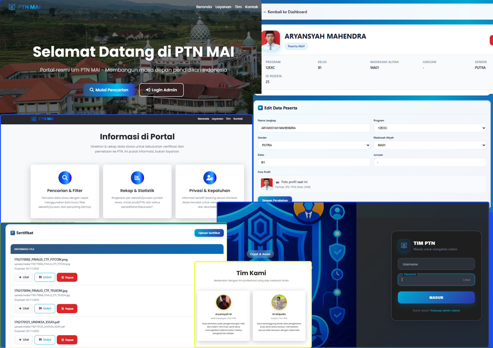

Web PTN MAI
Platform sekolah untuk mempermudah akses berkas guru dan siswa. Sebagai TIMPIN, saya berinisiatif membangun sistem ini untuk memberikan dampak positif bagi generasi mendatang di lingkungan sekitar.
Stack: